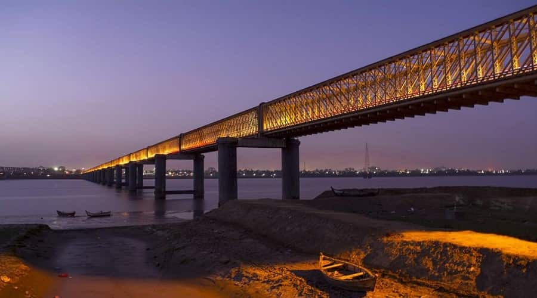

Welcome To Bharuch...

Peanut City
Bharuch formerly known as Broach, is a city at the mouth of the river Narmada in Gujarat in western India. Bharuch is the administrative headquarters of Bharuch District.
The city of Bharuch and surroundings have been settled since times of antiquity. It was a ship building centre and sea port in the pre-compass coastal trading routes to points West, perhaps as far back as the days of the pharaohs. The route made use of the regular and predictable monsoon winds or galleys.
Many goods from the Far East (the famed Spice and Silk trade) were shipped there during the annual monsoon winds, making it a terminus for several key land-sea trade routes. Bharuch was known to the Greeks, the various Persian Empires, in the Roman Republic and Empire, and in other Western centres of civilisation through the end of the European Middle Ages.
TAt the end of the 17th century, it was plundered twice, but recovered quickly. Afterwards, a proverb was composed about it, "Bhangyu Bhangyu Toye Bharuch", which translates to "Bish-boshed, ever Bharuch". As a trading depot, the limitations of coastal shipping made it a regular terminus via several mixed trade routes of the fabled spice and silk trading between East and West. During the British Raj it was officially known as Broach.
Bharuch was ruled by Delhi Sultanate for 94 years, Gujarat's independent Sultanate for 181 years, Mughal Sultanate for 164 years, independent nawabs for 36 years and Maratha rule for 19 years.
Bharuch has been the home to the Gujarati Bhargav Brahmin community for ages. The community traces its lineage to Maharshi Bhrigu Rishi and Bhagwan Parshuram who is considered by Hindus to be an incarnation of Vishnu. The Bhargav community still administers a large number of public trusts in the city. However the present day Bhargav Brahmins have migrated to Mumbai, Surat, Vadodara, Ahmedabad and other countries like the US, UK and Australia.
Famous Places in Bharuch City
- Golden Bridge
- Shri Swaminarayan Mandir
- Ninai Waterfalls
- Nilkantheshwar Temple
- Narmada Park
- Zarwani Waterfall
- Kadia Dungar Caves
Bharuch City Famous Food Item
- MP Dabeli
- Peanut
- Green Peanut
- Chikki
- Malai Ghari
© Copyright Reserved
Go To Main Page